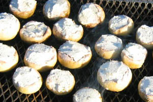

Champignons met kruidenkaas
Ingrediënten (voor 4 personen)
- 16 grote champignons
- 200 g kruidenkaas b.v. Boursin
Bereiding
- Haal de steeltjes uit de champignons en snijd ze fijn. Meng ze onder de kaas.
- Leg de champignonhoedjes in een overschotel en vul ze met de mengeling.
- Zet de champignons ongeveer 10 minuten in een voorverwarmde oven op 200°C, tot de kaas zacht geworden is en de champignons gaar zijn. Serveer met brood.